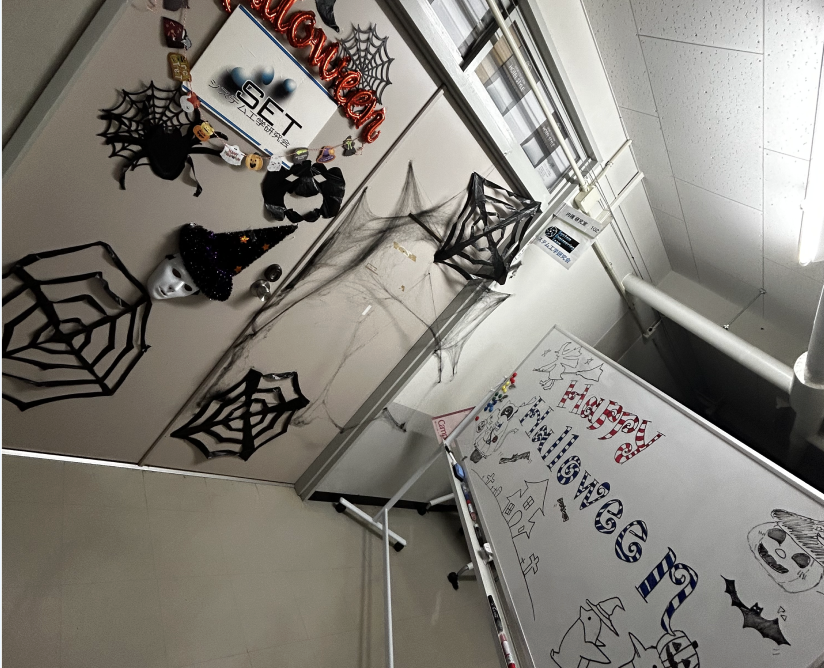
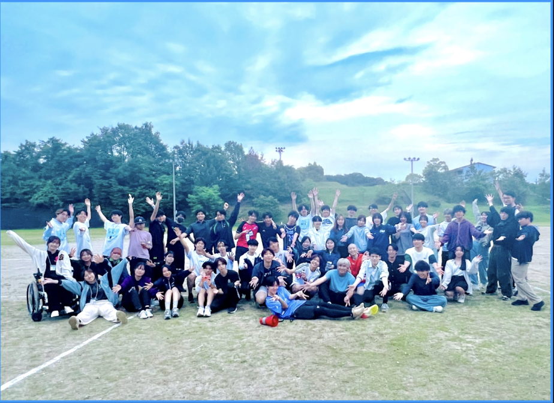
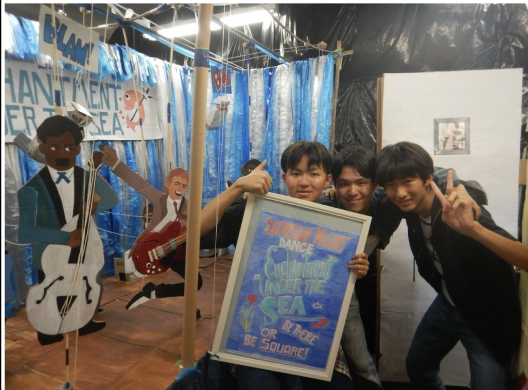

MY HISTORY & EXPERIENCES
これまでの学びと挑戦の軌跡

EDUCATION
愛知工業大学 メディア情報学科
2024年4月 - 在学中
システム工学研究会所属。Webデザイン、プログラミング、デジタルコンテンツ制作を幅広く学習しています。特にインタラクティブなWeb表現に関心を持ち、JavaScriptを用いたWebアプリケーション開発に取り組んでいます。
転専攻の経験
2025年度に情報科学部 情報科学科（旧KK）から、メディア情報学部 メディア情報学科（旧KX）へ転専攻しました。これにより、より深くWebとデザインの領域に特化し、現在の専門分野を確立することができました。この経験は、新しい環境への適応力と、自身の興味を追求する探求心を育みました。
EXPERIENCE & ACTIVITIES
Web制作アシスタント (アルバイト)
2025年4月 - 現在
地元企業のウェブサイト更新や簡単なLP（ランディングページ）制作を担当しています。HTML、CSS、JavaScriptを用いたコーディングスキルを実務を通して磨き、SEOを意識したコンテンツ作成や、顧客の要望に応じたサイト改善提案なども行っています。
Web制作 (ボランティア)
2024年10月 - 2025年3月
ある企業の公式イベントの特設サイト制作チームに所属し、デザインから実装まで一貫して携わりました。特に、イベント情報の分かりやすい表示方法や、参加者がスムーズに情報を得られるUI/UXの設計に貢献しました。
システム工学研究会 総務活動
2024年4月 - 現在
研究会活動の円滑な運営のため、ハロウィンやクリスマス、BBQなどのイベント企画・運営を担当しています。参加者の笑顔と円滑な進行が何よりのやりがいでした。裏方での準備や調整能力、チームでの協力体制を学びました。


文化祭展示制作「未来への旅」
2023年9月
学園祭で「未来への旅」をテーマにした展示を企画・制作しました。空間演出や小道具づくりを担当し、来場者が写真を撮りたくなるようなワクワク空間を作り上げました。企画力と実現力を養いました。

SKILLS & TOOLS
言語・フレームワーク
- HTML5 / CSS3 (Sass)
- JavaScript (ES6+)
- React.js (学習中)
- Node.js (基礎)
デザインツール
- Figma
- Adobe XD
- Adobe Photoshop (基礎)
- Adobe Illustrator (基礎)
その他
- Git / GitHub
- VS Code
- Slack / Notion
- Webflow (学習中)